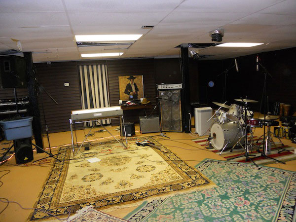

The Country Club Sandwiches
The Country Club Sandwiches
- Zach Lever
- Lee McAlilly
- Jack Reed
Songs
- 1. The Country Club Sandwiches
- 2. Last Night the Bottle Came to Town
- 3. If He Breaks Your Heart
- 4. Can't Get No Service (In This Baptist Church)
- 5. I Saw a Picture of You Dancing
- 6. Just a String on His Guitar (Outtake)
Credits
"The Country Club Sandwiches"
- Drums Katie Grace Helow
- Bass Zach Lever
- Rhythm Guitar Zach Lever
- Banjo Lee McAlilly
- Lead Guitar Jack Reed
- Vocals Jack Reed, Zach Lever, Katie Grace Helow and Lee McAlilly
"Last Night the Bottle Came to Town"
- Drums David MacNutt
- Bass Zach Lever
- Rhythm Guitar Lee McAlilly
- Electric Guitar Jack Reed
- Vocals Lee McAlilly
- Backing Vocals Jack Reed and Katie Grace Helow
"If He Breaks Your Heart"
- Drums Katie Grace Helow
- Bass Zach Lever
- Rhythm Guitar Jack Reed
- Electric Guitar Lee McAlilly
- Slide Guitar Zach Lever
- Vocals Harlan Heathrow, Jr. from Jamestown, KY
- Backing Vocals Lee McAlilly and Katie Grace Helow
"Can't Get No Service (In This Baptist Church)"
- Drums Brett Bennett
- Bass Lee McAlilly
- Harmonica Zach Lever
- Guitar Jack Reed
- Vocals Jesse and Tommy Ferguson from Medon, TN
"I Saw a Picture of You Dancing"
- Drums Brett Bennett
- Bass Lee McAlilly
- Electric Guitar 1 Jack Reed
- Electric Guitar 2 Zach Lever
- Organ David MacNutt
- Vocals Lee McAlilly, Jack Reed and Zach Lever
"Just A String On His Guitar"
- Drums David MacNutt
- Bass Lee McAlilly
- Electric Guitar Zach Lever
- Rhythm Guitar Jack Reed and Zach Lever
- Vocals David Jennings from Auckland, NZ
Written, recorded, and mixed at the corner of Lewis and Lime streets in Jacksonville, FL on April 1-4, 2011


Lyrics
"The Country Club Sandwiches"
V1
It's early-evenin' Tuesday night, 'bout 7ben - 8 o'clock
And I'm headin' to the honky tonk to get a little hot.
When I busted through the swangin' door well whom all did I hear?
It 'twas the Country Club a-Sammiches gettin' into gear!
Chorus
They's the Country Club a' Sammiches and Lordy how they swing!
They's the Country Club a' Sammiches and can't you hear 'em sing?
They sing, "Billy-Bobby, Dave 'n Robby Jimmy-John and Bob!
We's the Country Club a' Sammiches, come get us while we're hot!"
Guitar Break
V2
Well it didn't take me long to get my dayncin' shoes on tight
And the jelly from the sammich band was fillin' me just right.
I said, "Howdy boys, I came from town - I heard you're good with cheese?"
They said, "Step up to our counter son we'll fill your gut with ease!"
Chorus
Bridge
Well it sure do take a polished man to blend a meal just so,
But these old boys from Deliville can make you doe-si-doe.
With their market fresh ingredients of country, rock and soul,
Their ain't a palate near or far that can resist their roooooooooooool!
V3
By the time the boys were finally done my spirit was restored,
And the gal I had across my arm, her feets was mighty sore!
But the yummy-comfort deli feeling lingered on and on,
And as I drifted off to sleep I heard their tasty song!
Chorus
Outro Testimony
"Last Night the Bottle Came to Town"
V1
Last night the bottle came to town
Whiskey was my only friend around
Inside a bar where no one's found
A drink poured neat kept me safe and sound
V2
I used to never run around
Cause you were the only game in town
You were closer than my kin
But now I drink alone again
Chorus
And the only thing to do
Is pour another one for you
There's nothing you could say
To make this pain go away
Last night the bottle came to town
Solo
V3
I saved my mama's wedding ring
Now that doesn't mean a thing
All the that time all those plans
Now it'll touch your hand
Chorus
"If He Breaks Your Heart"
Chorus
If he breaks your heart...can I lick the wound?
I've tried to keep my distance, settin' here across the room.
I can see it in his face, he'll be leavin' you so soon,
So when he breaks your heart, can I lick the wound?
V1
The two of you walked in here hand in hand,
But when the band stopped playin' he got mad.
You've tried to calm him down, leadin' him towards the door.
But his face is turnin' red, and he wants to settle a score.
Chorus
V2
Sometimes a man gets set in his ways,
And yours looks he's had one of those days.
He wanted one more song, but the band refused to play.
So he broke off his bottle, and walked up towards the stage.
Guitar Solo
V3
That drummer seen him comin', and guessed his ruse.
But your man was whiskey-bent with nothin' to lose.
He put his finger to the drummer's chest...and you can prolly guess the rest.
His bloodied mouth was facin' North, and his crooked nose was facin' West!
Chorus
If he breaks your heart...can I lick the wound?
I've tried to keep my distance, settin' here across the room.
I can see it in his face, he'll be walkin' out on you,
So when he breaks your heart, can I lick the wound?
"Can't Get No Service (In This Baptist Church)"
* Lyrical contribution by Brian Hall
V1
I can't get no service in this dadburn Baptist church!
My deevice says I got two bars but I cain't Google search.
Preacher's ramblin' on and on 'bout a deevine heaben'ly place,
While the Saints are just now kickin' off and there's a big-ole Sprint Car race!
Chorus
I come ev'ry Sunday to receive the perfect Word,
When the Good Book is a' streamin' t'won't no prophesy be heard!
The Deacon says the online world holds a host 'a sin,
But the sweetest words I ever saw 'twas the password - "Jesus Lives!"
V2
Genesis, Exodus, Numbers, Acts and 'ole Deuteronomy
But the 'ole Good Book got it wrong when it forgot DirecTV!
My batt'ry is a'runnin' low, you might call me a quitter,
'Cause my head's spinnin' all around and mind's all a-twitter!
Chorus
"I Saw a Picture of You Dancing"
V1
Baby! I saw a picture of you dancing!
Maybe! I could do a dance with you.
Crazy! I'm in the mood for some romancin'!
Baby! Let's get you in your dancin' shoes.
Chorus
We can roll inside, or step out in the weather,
It don't matter sugar if we're dancin' together!
Guitar Break
V2
Honey! I saw a picture of you smiling!
Ain't it Funny! I'd like to tell a joke or tow to
you.Sunny! With you I'd walk a country mile and
Honey! We could share a laugh or two.
Chorus
Guitar Break
Chorus
Outro Boy!
"Just a String on His Guitar"
* Note: David Jennings objected to the use of the Maj7 chord at the end of this song, but the producer demanded it.
V1
She was gone again this mornin' and I know exactly where she's bound.
Last night there were promises, but now her picture's all that's found
Where here boots were laid at midnight there's an emptiness I know
He's got a gig tonight in Reno and she'll be waitin' at the show.
Chorus
'Cause he's the one who winds her
And he don't really mind her
He cuts her when she gets too long,
I clean her when her welcome's warn
He plays her every night, makes a dollar in his jar.
Just a string on his guitar, good Lord, just a string on his guitar.
V2
Monday morning comes and she's back to me again
Says not a word about it, just quietly walks on in.
There's a silent understanding, between her soul and mine,
And though we lie together, it's only me who cries.
Solo
Chorus
Thanks to the Following
- David MacNutt
- Katie Grace Helow
- Brett Bennett
- Brian Hall
- Mark Harrod
- Kyle Rogers
- Jesse and Tommy Ferguson from Medon, TN
- Harlan Heathrow, Jr. from Jamestown, KY
- David Jennings from Auckland, NZ
Original List of Potential Song Titles
- "Ain't Been Around the World (But I Been Around the Block)"
- "Ain't Been Around the World (Cause the World is Flat!)"
- "Another G-D-C Song" - lamenting the lack of chordal diversity in country music songwriting
- "She Ain't Got a Light (But We're a Perfect Match)"
- "Cousins Are the Hardest Kind to Love"
- "Emailing Yo'self"
- "Blinded by the Bright Side"
- "Honky Tonk Thievery" - about a girl that steals a young man's heart in a honky tonk
- "Dog Days of Summer" - sappy country love song about fleeting summer love
- "Fax Man" - about a blue-collar fax repairman that tries to win the heart of a receptionist in the office where he's working for the day - Mark Harrod contribution
- "Paying Off a Sleep Debt"
- "No One 'Round, Just Me and My Rod"
- "If He Breaks Your Heart (Could I Lick the Wound?)"
- "Can't Get Service in This Church" - with lyrics contributed by Brian Hall
- "Hell I Don't Mind If That Child Wants to Get Butt Naked in Public"
- "I Wonder If Obama Ever Does This Too"
- "Jimmy's Last Words Were 'Hey Looka Here'"
- "Pissing at a Football Game"
- "The King of Spades" - first person account of a ditch-digger and his trusty shovel. He finds his "queen of hearts", and nine months later, "there'll be an ace in the hole" - Mark Harrod Contribution
- "Red State Blues" - in 2007, Georgian (USA) country guy gets confused when he hears on the news that Russia has invaded Georgia (of Europe). He's heard in the past that GA is a "red state," but never knew what it meant until now (or so he thinks). He's thinkin' Georgia's gone commie red, and he's got the blues as a result.
- "Susie Will Never Leave Me (She's a Pomeranian)"
- "Honey I Can't Smell a Thing"
- "10 Years Sober (I'll Drink to That)" - contributed by Brian Hall
- "Uncle Sam Never Laid a Hand on a Koran" - contributed by Brian Hall
- "The Only Happy Holiday Is Christmas" - contributed by Brian Hall
- "Baby, Do Me (...a Favor and Pass the Eggnog)"
- "Last Night the Bottle Came to Town"
- "We's the Country Club Sandwiches"
- "She's Just a String on His Guitar"
- "Rosebush in the Backyard"
- "I Saw a Picture of You Dancin'"
- "(I Don't Need No) Natural Mail Enhancement" - about a bumpkin confusion regarding what he believes will be more bills in the mailbox - contributed by Mark Harrod
- "That Pie Ain't Fit To Eat" - contributed by Mark Harrod
- "My Wife Left Me For My Best Friend, I Sure Do Miss Him" - contributed by Kyle Rogers
- "Get Your Biscuits In The Oven, And Your Buns in the Bed" - contributed by Kyle Rogers
- "At The Gas Station of Love, I Got the Self-Service Pump" - contributed by Kyle Rogers
- "I Changed Her Oil, She Changed My Life" - contributed by Kyle Rogers
- "I Went Back to My Fourth Wife for the Third Time and Gave Her a Second Chance to Make a First Class Fool Out of Me"